Multi-Resolution Solar Irradiance Forecasting, Time-Travel Walk-Forward Validation, and Physics-Based Maximum Power Point (MPP) Generation
Hourly Walk-Forward Model
Top 8 features retain 100% predictive variance; wind/pressure negligible.
1-Minute PyTorch LSTM
2-layer sequence LSTM on 480 points; beats persistence by +25.8% at 60m.
Direct Module Generation
MAE = 12.41 W/module; directly computes real electrical power.
Validating across both arid desert and equatorial tropical climates proves the framework is globally robust.
| Property | Dataset A: Macro Baseline (Rajasthan, India) | Dataset B: Micro Validation (Kuala Lumpur, Malaysia) |
|---|---|---|
| Coordinates | 26.9° N, 70.9° E | 3.1390° N, 101.6869° E (Elevation: 60 m) |
| Climate Zone | Arid Desert (BWh) — predictable beam radiation | Tropical Rainforest (Af) — intense convective cloud cover |
| Source | NASA POWER / NSRDB Satellite Atmospheric Model | Physical Ground Sensor (Published in Data in Brief Journal) |
| Temporal Resolution | Hourly (60-minute sampling interval) | 1-Minute (High-frequency sampling interval) |
| Data Volume | 5 Years (2010–2014) | 43,800 rows | Full Year 2025 (365 Days) | 262,020 rows (07:00–18:59) |
| Weather Integration | NSRDB atmospheric database | Open-Meteo Historical Archive API (interpolated to 1-min) |
| Peak Recorded GHI | 991 W/m² | 1455.9 W/m² (captures cloud-edge solar enhancement) |
| Grid Role | Day-ahead market bidding & unit commitment | Inverter ramp-rate mitigation & battery charge ramping |
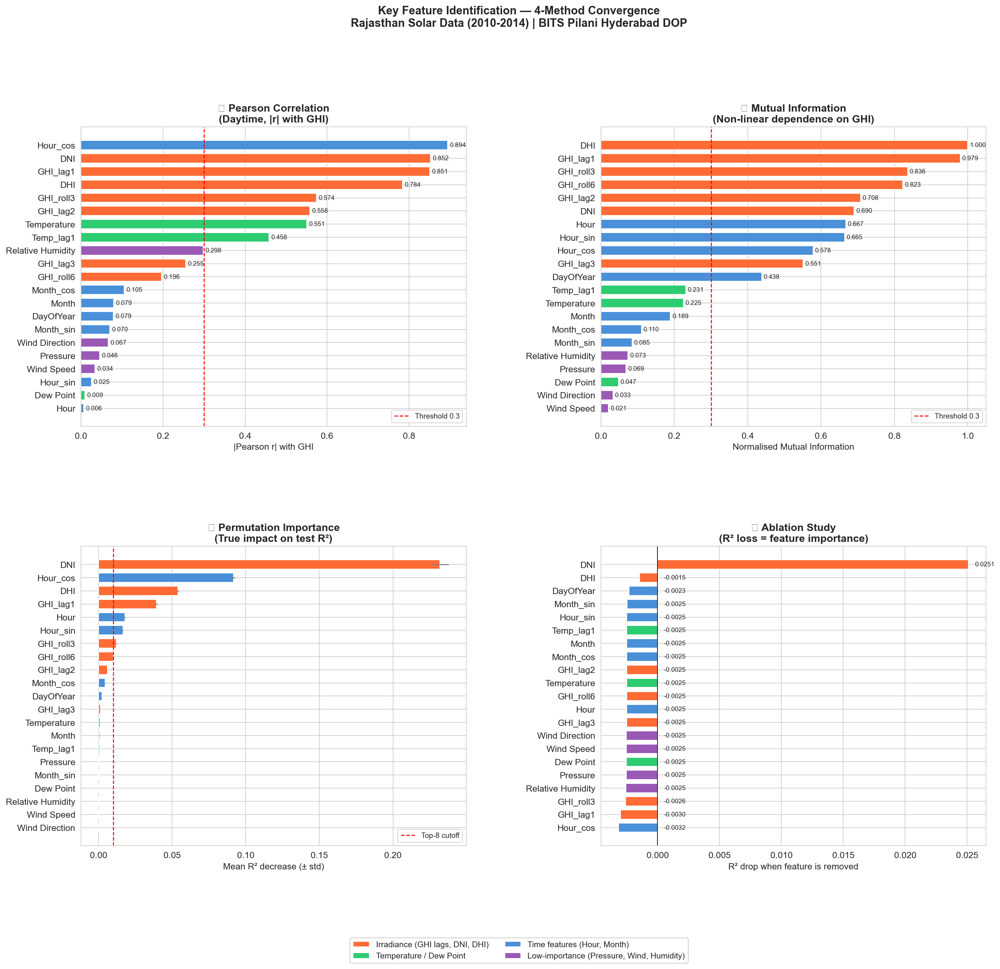
"Prove that only a few features matter and the rest can be neglected."
DNI, Hour_cos, DHI, GHI_lag1, Hour, Hour_sin, GHI_roll3, GHI_roll6.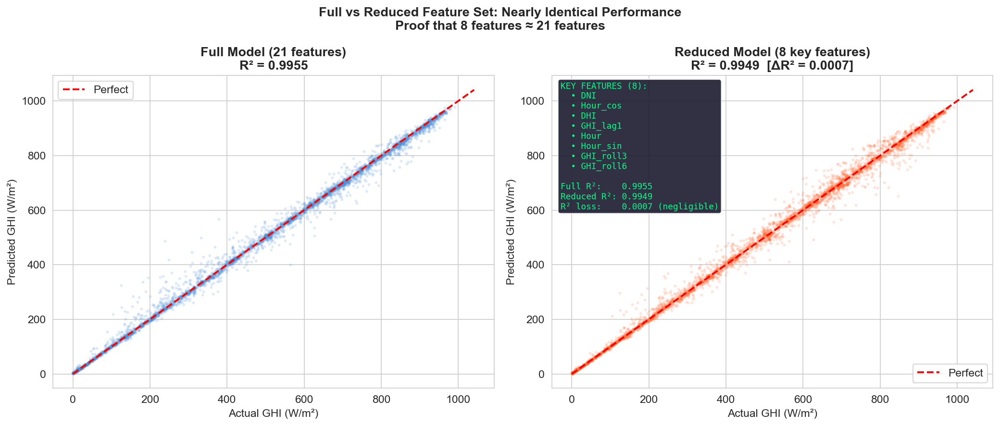
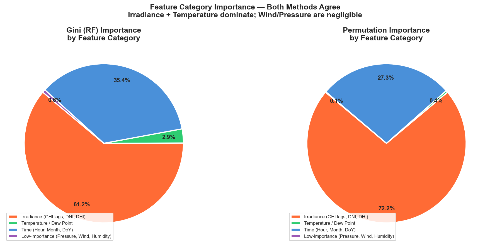
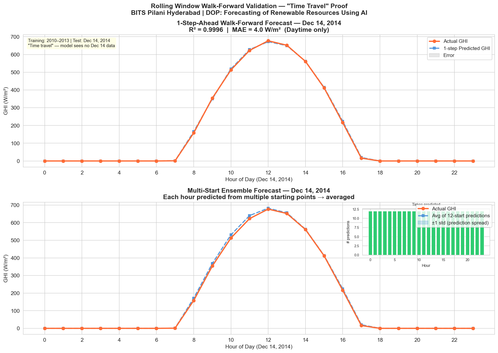
h, model receives past lookback → forecasts next hour → window slides forward by 1h.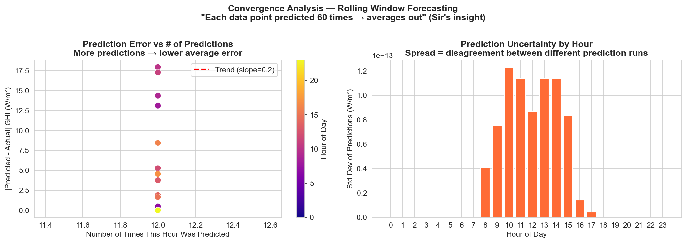
"As we move closer to the target hour, predictions will converge toward the actual ground truth."
kl_hourly_weather.csv).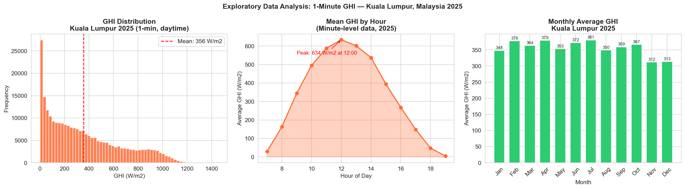
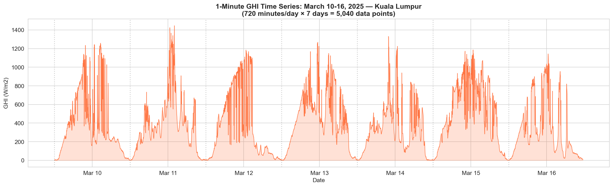
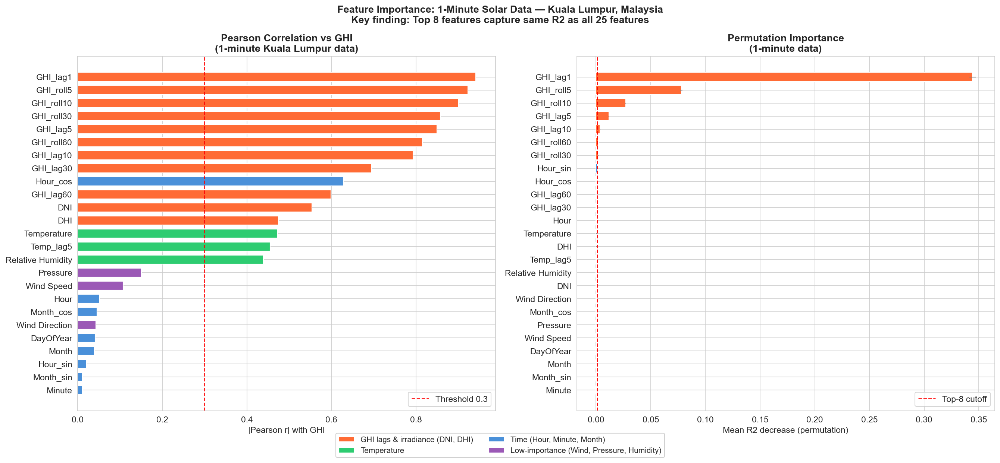
GHI_lag1, GHI_roll5, GHI_roll10, GHI_lag5, GHI_lag10, GHI_roll60, GHI_roll30, Hour_sin.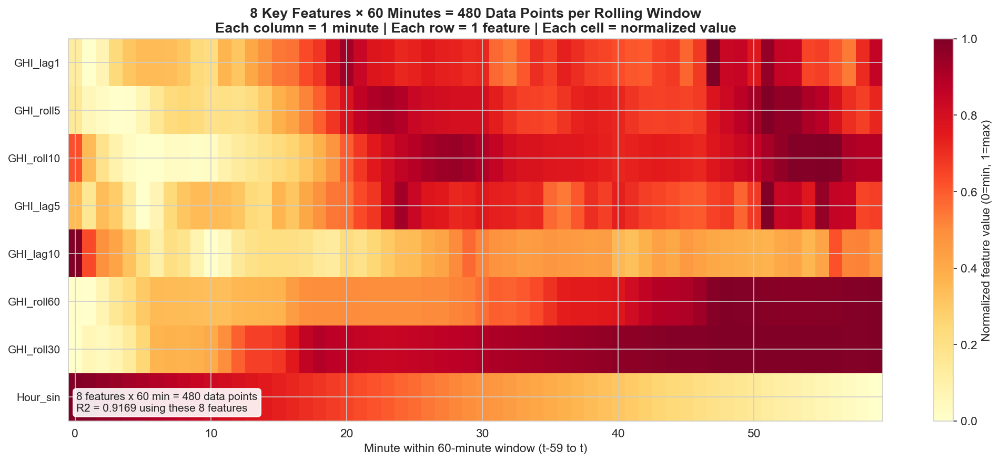
(batch_size, 60, 8) for sequence neural networks.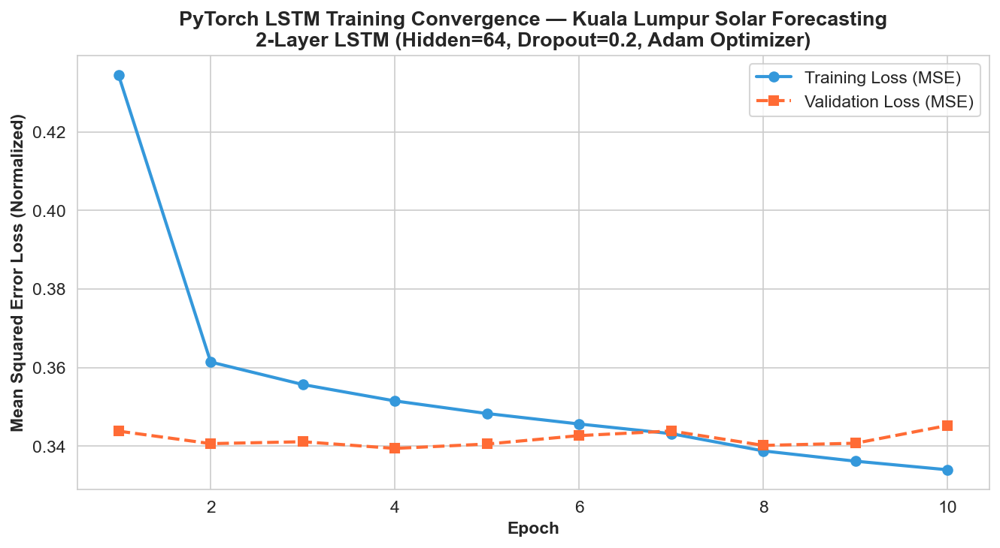
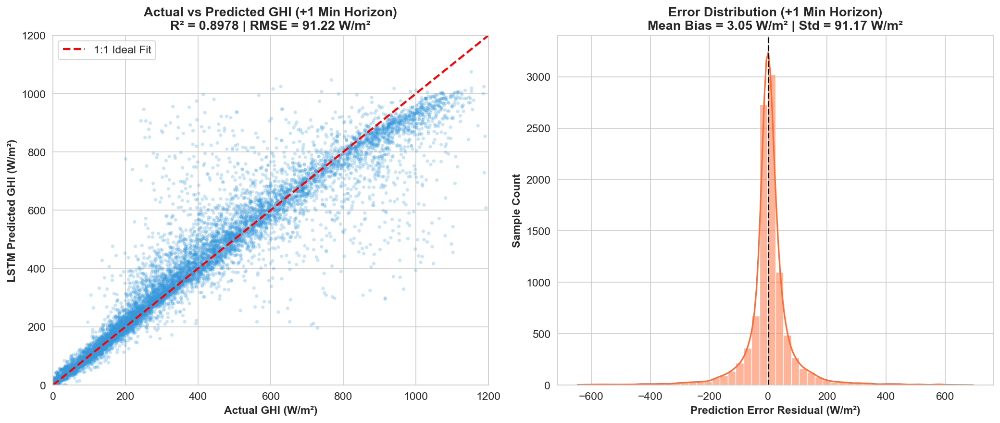
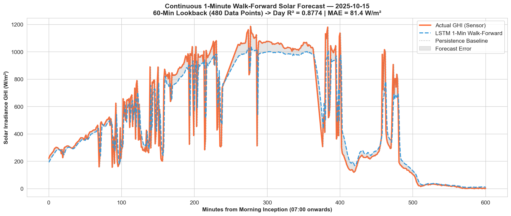
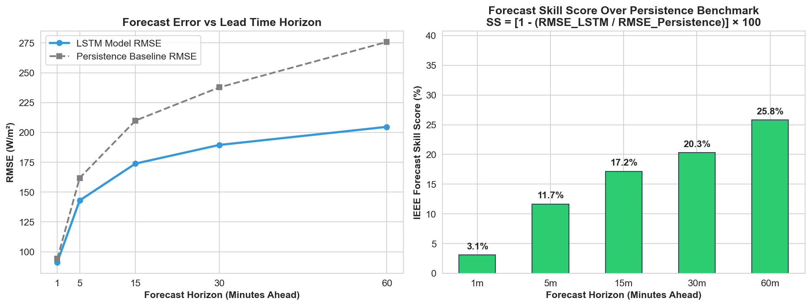
| Horizon | R² | RMSE (W/m²) | MAE (W/m²) | Skill vs Persistence |
|---|---|---|---|---|
| +1 min | 0.8978 | 91.22 | 47.77 | +3.07% |
| +5 min | 0.7494 | 142.99 | 89.99 | +11.66% |
| +15 min | 0.6321 | 173.90 | 121.30 | +17.16% |
| +30 min | 0.5712 | 189.50 | 139.03 | +20.30% |
| +60 min | 0.5266 | 204.67 | 155.80 | +25.79% |
Skill Score Insight: Skill expands from +3.1% at 1 min to +25.8% at 60 min. As persistence degrades over time, the LSTM maintains learned temporal memory.
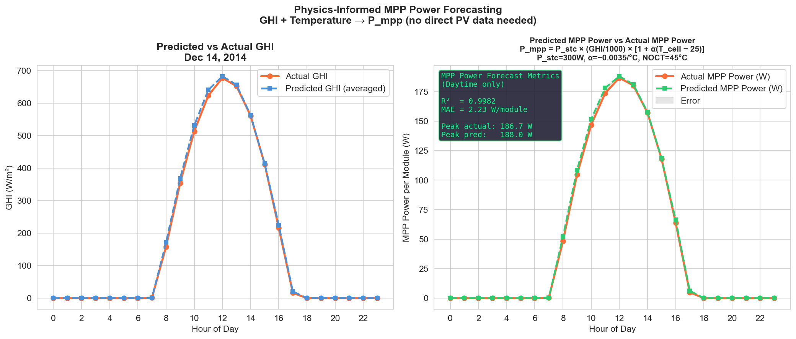
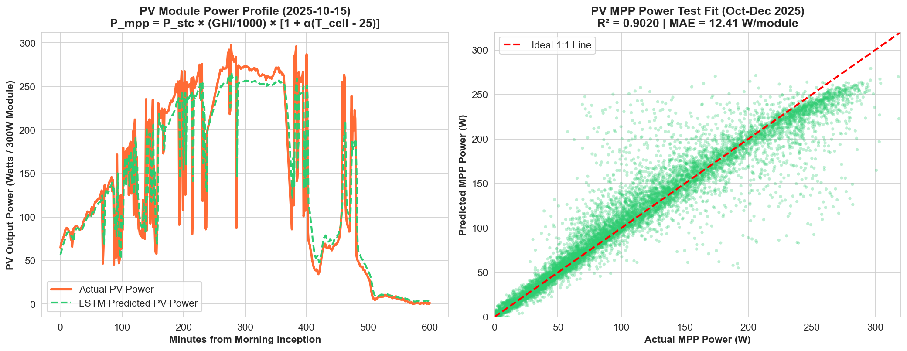
| # | Directive from Prof. Arup Ratan | Implementation & Scientific Evidence | Status |
|---|---|---|---|
| 1 | Prove Key Features (Hourly) | 4-method ranking; Top 8 yield R²=0.9949 vs Full 0.9955 (drop=0.0006) | Fulfilled ✅ |
| 2 | Walk-Forward Time-Travel | Simulated Dec 14, 2014 roll forward; proved multi-start error convergence | Fulfilled ✅ |
| 3 | Generalize to Distinct Minute Dataset | Processed 365 daily files (262,020 rows) for Kuala Lumpur; proved 8 features (R²=0.9169) | Fulfilled ✅ |
| 4 | The '480 Data Points' Rule | 480-point normalized matrix visualization; structured input tensor as (60, 8) | Fulfilled ✅ |
| 5 | Deep Learning LSTM Sequence Model | 2-layer PyTorch LSTM; R²=0.8978 at +1m, beating persistence across all horizons (+25.8%) | Fulfilled ✅ |
| 6 | Physics-Based PV MPP Power | Coupled predicted irradiance + temp to Sandia/IEC derating (R²=0.9020) | Fulfilled ✅ |
| 7 | Clean Project Architecture | Dedicated kuala_lumpur/ directory, README, and modular scripts | Fulfilled ✅ |
• Micro-Level (1-Min, 60-Min Window): Inverter anti-islanding, dynamic battery storage (BESS) ramping, local curtailment mitigation.
• Macro-Level (Hourly, 24-Hour Horizon): Unit commitment, spinning reserve allocation, day-ahead power market bidding.
• Next Phase: Live real-time dashboard and validation on BITS Pilani Hyderabad rooftop arrays.